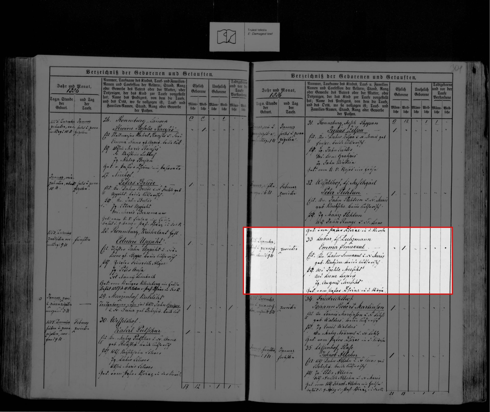
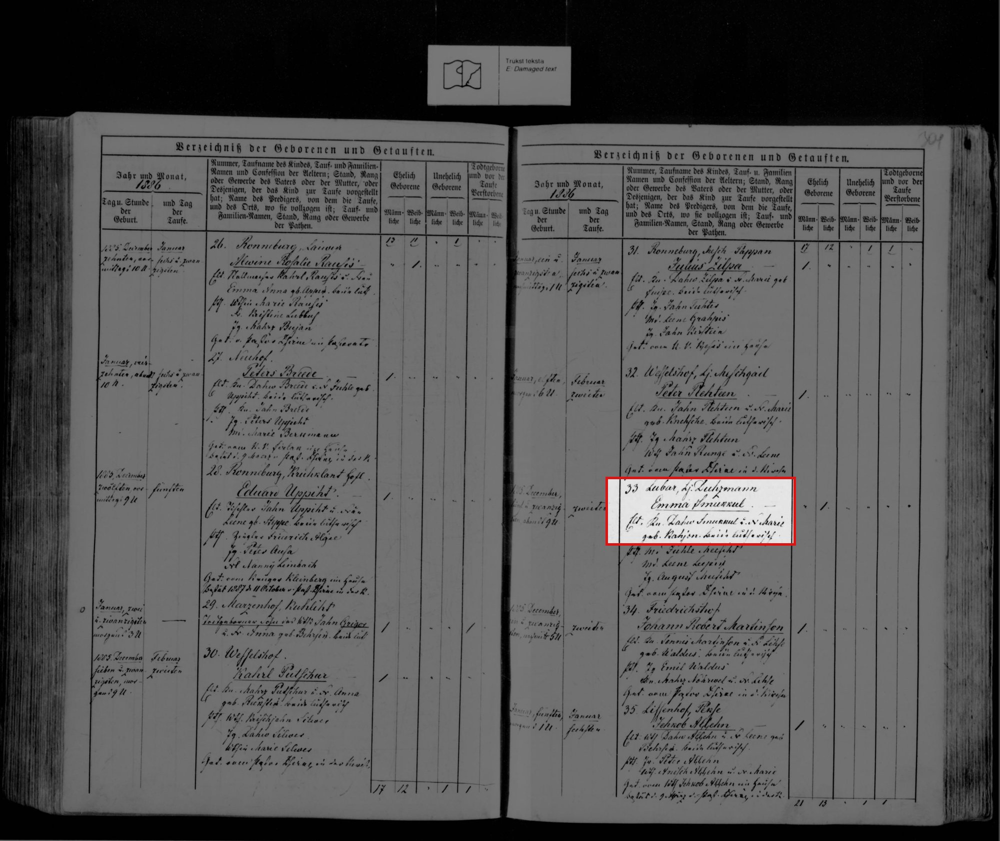
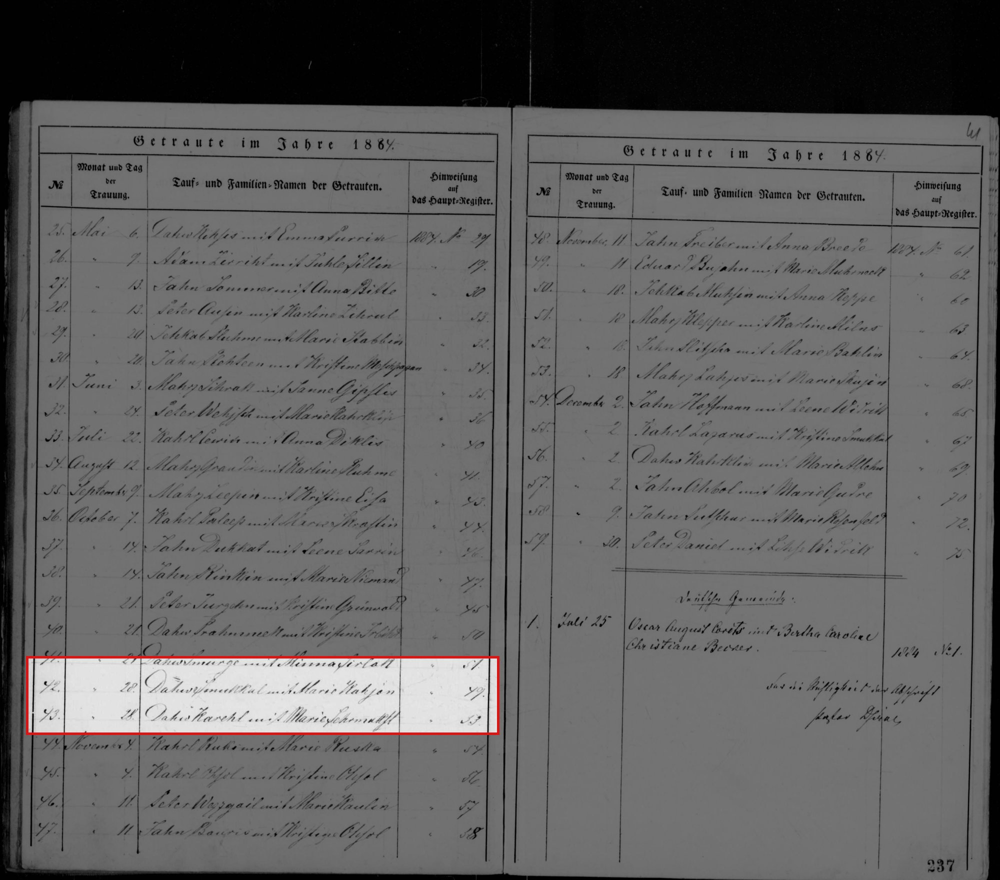
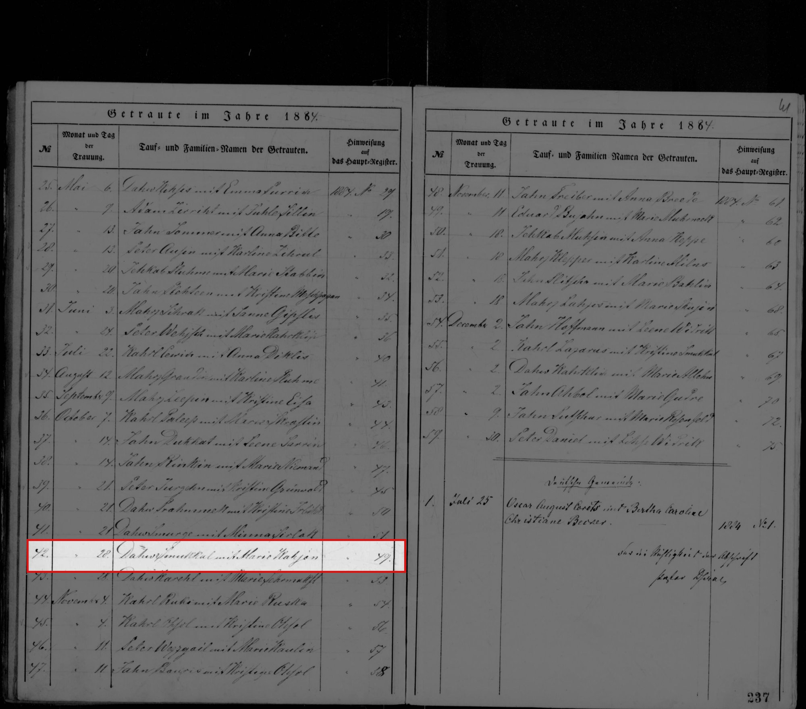

Dāvis Smukuls
Peter's great-great-grandfather.
Also recorded as Dāvis Smukulis; Дава Смукулъ (1911); Dahw Smukkul (1886 baptism of Emma).
Dāvis Smukuls. He married Marija Kajone on 9 Nov 1884 in Rauna, Cēsis district, Vidzeme, Latvia2,3.
Family
- Wife
- Marija Kajone · married on 9 Nov 1884 in Rauna, Cēsis district, Vidzeme, Latvia2,3
- Children
- Emma Smukule 1886–1970 documented
- Anna Smukule b. 1889 documented
Life events
| Event | Date | Place and details |
|---|---|---|
| Married | 9 Nov 1884 | with Marija Kajone Rauna, Cēsis district, Vidzeme, Latvia Old Style (Julian) date: 28 Oct 18842,3 |
| Work | 1886 | Rauna, Cēsis district, Vidzeme, Latvia Knecht (farmhand, Latvian kalps) at Emma's baptism. Wife Marie née Kahjon.1 |
Records




Open questions
Sources
- Rauna births 1886 no. 33, LVVA f. 235, apr. 7, l. 517, img 311, LVVA f. 235, apr. 7, l. 517, image 311.
Elt. Kn. Dahw Smukkul u. d. Marie geb. Kahjon
Translation: parents: farmhand Dahw Smukkul and his wife Marie née Kahjon
Knecht (farmhand, Latvian kalps) at Emma's baptism. Wife Marie née Kahjon.
- Rauna marriages 1884 no. 42, LVVA f. 235, apr. 7, l. 518, img 5 (left page), LVVA f. 235, apr. 7, l. 518, image 5.
42. | [Oct.] 28. | Dahw Smukkul mit Marie Kahjon | 47[?]
Translation: No. 42, 28 [October 1884], Dāvis Smukkul with Marie Kahjon, [main-register no.] 47[?]
28 Oct 1884 (Julian) = 9 Nov 1884 (Gregorian). Summary list entry 1884 no. 42. The full entry (ages, fathers, residences) is in the 1884 main marriage register, no. 47 per sf-rauna; on the crop the digit could also be 49. The main register was not searched. Emma was born 14 months later.
- Getraute im Jahre 1884, no. 42, LVVA f. 235, apr. 7, l. 518, img 5 (left page), LVVA f. 235, apr. 7, l. 518, image 5.
42. [October] 28. Dahw Smukkul mit Marie Kahjon … [1884 Nº] 49[?]
Translation: No. 42, 28 [October]: Dahw Smukkul with Marie Kahjon; see main register 1884 no. 49[?]
Round 2 resolves the date: entry no. 42 is under month 'October' (carried from no. 36), day 28. The yearly volume LVVA 235/7/518 is the consistory duplicate (summary list only: no., date, names); its last column 'Hinweisung auf das Haupt-Register' gives 1884 no. 49[?47] — the full entry (ages, fathers, residences) is in the Rauna main register, which is NOT among Raduraksti's Rauna holdings (every Rauna volume 1834–1903 listed there is a yearly 'L M' duplicate or a Dz/Ds book; checked the full Rauna list, raw/raduraksti-rauna-registers.html). The origin question (item 1) therefore needs LVVA/the parish main register.